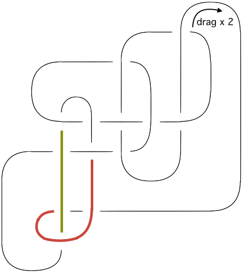

Computing an upper bound on bridge indexes with Python
Genevieve Johnson
MA thesis defense, Fall 2017
University of Northern Iowa
What are we talking about?
- Knots, diagrams & the bridge index
- Planar diagram codes
- Reidemeister moves
- Putting these ideas together in code
Knots & diagrams
Parts of a diagram

Bridge count vs. bridge index
Why do we care about the bridge index?
Planar diagram codes
(2,6,3,5)(4,2,5,1)(6,4,1,3)
(2,6,3,5)(4,2,5,1)(6,4,1,3)
Creating a PD code
- Pick a starting point & direction to travel
- Label each edge
- Write a tuple for each crossing
A diagram may have multiple PD codes!
Draw a diagram from a PD code
(2,6,3,5)(4,2,5,1)(6,4,1,3)
Reidemeister moves

Theorem
Two knot diagrams belonging to the same knot, up to planar isotopy, can be related by a sequence of the three Reidemeister moves.
Simplify with Reidemeister move type 1
The usual label changes
x → x, x<b
x → x-2, x>b
...unless b=1
Applying the usual label changes:
x → x, x<1
x → x-2, x>1
Instead:
x → x-2, x>2
x → m-2, x=2
...or b=m
Applying the usual label changes:
x → x, x<m
x → x-2, x>m
Instead:
x → x, x≤m-2
x → 1, x=m-1
Simplify with Reidemeister move type 2
The usual label changes
x → x, x<n1
x → x-2, n1<x<n2
x → x-4, x>n2
...unless edge 1 is involved
Applying the usual label changes:
x → x, x<1
x → x-2, 1<x<n2
x → x-4, x>n2
Instead:
x → m-4, x=2
x → x-2, 2<x<n2
x → x-4, x>n2
"Drag the underpass" move
Changes to diagrams
The general idea
x → x, x≤min(a,y)
x → x+2, min(a,y)<x≤max(a,y)
x → x+4, x>max(a,y)
Example
Drag (3,7,4,6) along edge 6 under (5,10,6,11)
Terminology change!
- bridge
- a maximal overpass which we have decided may have crossings added to it
Process overview
Create knot & simplify
↓
Are there crossings?
→
yes
Designate 2 bridges
↓
no
↓
Count bridges
Drag underpasses & simplify
←
Designate a bridge
⟵
no
↓
⟶
yes
Are there "free" crossings?
How do we keep track all of this?
Knot
- name
- crossings
- free_crossings
- bridges
Crossing
- pd_code
- bridge
Process overview
Create knot & simplify
↓
Are there crossings?
→
yes
Designate 2 bridges
↓
no
↓
Count bridges
Drag underpasses & simplify
←
Designate a bridge
⟵
no
↓
⟶
yes
Are there "free" crossings?
Designating bridges - Pick T's
Finding good underpasses to drag
Crossing arrangements

Follow the T stems
Drag count
...is only a maximum
Simplified bridges
Example
Before:
knot.bridges={0:[3,4], 1:[9,10], 2:[5,7]}After:
knot.bridges={0:[2,2], 1:[7,8], 2:[3,5]}Adjusted:
knot.bridges={1:[7,8], 2:[3,5]}Merged bridges

Example
Before:
knot.bridges={1:[7,8], 2:[3,5]}After:
knot.bridges={1:[5,6], 2:[3,5]}Adjusted:
knot.bridges={1:[3,6]}Example: 12a15
PD code
[1, 5, 2, 4], [3, 8, 4, 9], [5, 11, 6, 10],[7, 14, 8, 15], [9, 2, 10, 3], [11, 23, 12, 22],[13, 20, 14, 21], [15, 6, 16, 7], [17, 12, 18, 13],[19, 1, 20, 24], [21, 16, 22, 17], [23, 19, 24, 18]Designate [5, 4] & [8, 9] as bridges
Drag crossing [9, 2, 10, 3]
Drag crossing [21, 1, 22, 26]

Drag crossing [7, 17, 8, 16]
Drag crossing [29, 14, 30, 15]
Designate another bridge
Drag crossing [35, 61, 36, 60]
Drag crossing [61, 46, 62, 47]
Drag crossing [61, 104, 62, 105]
Drag crossing [35, 82, 36, 83]
Drag crossing [205, 168, 206, 169]
No more moves
But we could have made different choices!
Results for knots with 12 crossings
Knots with b(K) = 4
12a29
12a30
12a33
12a36
12a113
12a114
12a116
12a117
12a119
12a122
12a157
12a164
12a166
12a167
12a182
12a195
12a554
12a692
12a693
12a694
12a750
12a801
12n55
12n56
12n57
12n58
12n59
12n60
12n61
12n62
12n63
12n64
12n66
12n67
12n219
12n220
12n221
12n222
12n223
12n224
12n225
12n229
12n261
12n553
12n554
12n555
12n556
12n642
Knots with b(K) = 2
12a38
12a169
12a197
12a204
12a206
12a221
12a226
12a239
12a241
12a243
12a247
12a251
12a254
12a255
12a257
12a259
12a300
12a302
12a303
12a306
12a307
12a330
12a378
12a379
12a380
12a384
12a385
12a406
12a425
12a437
12a447
12a454
12a471
12a477
12a482
12a497
12a498
12a499
12a500
12a501
12a502
12a506
12a508
12a510
12a511
12a512
12a514
12a517
12a518
12a519
12a520
12a521
12a522
12a528
12a532
12a533
12a534
12a535
12a536
12a537
12a538
12a539
12a540
12a541
12a545
12a549
12a550
12a551
12a552
12a579
12a580
12a581
list continues
12a582
12a583
12a584
12a585
12a595
12a596
12a597
12a600
12a601
12a643
12a644
12a649
12a650
12a651
12a652
12a682
12a684
12a690
12a691
12a713
12a714
12a715
12a716
12a717
12a718
12a720
12a721
12a722
12a723
12a724
12a726
12a727
12a728
12a729
12a731
12a732
12a733
12a736
12a738
12a740
12a743
12a744
12a745
12a758
12a759
12a760
12a761
12a762
12a763
12a764
12a773
12a774
12a775
12a791
12a792
12a796
12a797
12a802
12a803
12a1023
12a1024
12a1029
12a1030
12a1033
12a1034
12a1039
12a1040
12a1125
12a1126
12a1127
12a1128
12a1129
12a1130
12a1131
12a1132
12a1133
12a1134
12a1135
12a1136
12a1138
12a1139
12a1140
12a1145
12a1146
12a1148
12a1149
12a1157
12a1158
12a1159
12a1161
12a1162
12a1163
12a1165
12a1166
12a1273
12a1274
12a1275
12a1276
12a1277
12a1278
12a1279
12a1281
12a1282
12a1287